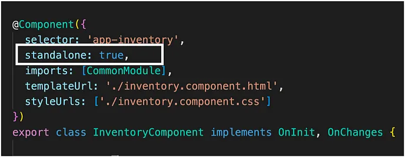
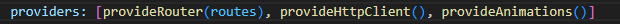
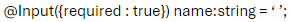
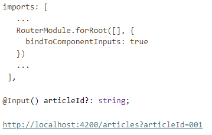
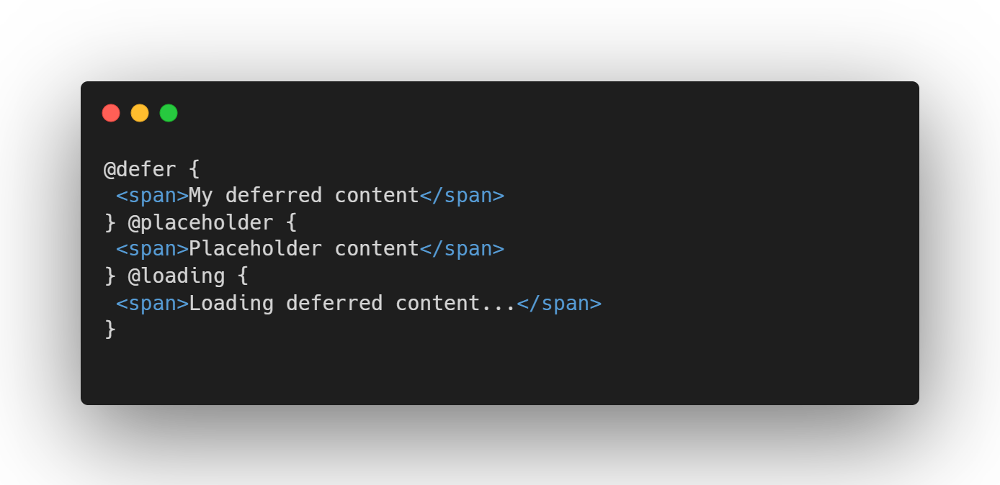

- Transition the Angular language service to Ivy
- Optimized build speed and bundle sizes with Angular CLI webpack 5
- Migrate to ESLint from TSLint
- Faster apps by inlining critical styles in Universal applications
- Nullish Coalescing (??) {{nullish}}
- Remove legacy View Engine.
- Deprecate and remove IE11 support
- Typescript 4.4 and Rxjs 7.4 support
- Improvements in build and other core functionalities
- Intro to Standalone component with “standalone : true” flag

- Modern CSS support
- Typescript 4.7
- Improvements in build and other core functionalities in support of standalone
- Stable Standalone components.
- ESbuild support for faster build times (needs to be enabled in angular.json)
- 11% bundle reduction because of router approach change in favor of standalone
- Introduction to provideRouter() and provideHttpClient()

- Reactive angular with signals.
- SSR new and improved
- Experimental Jest support
- Standalone components project with ng new --standalone
- Required Inputs with

- Router Input (query parameters) without ActivatedRoutes

- Deferrable views (developer preview)

- Improved SSR and build system (Vite with ESbuild)